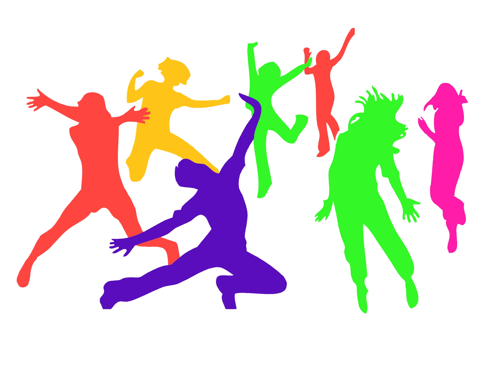
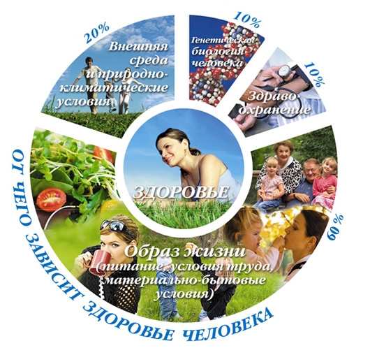

Что такое здоровый образ жизни и зачем он нужен.
Здоровый образ жизни (ЗОЖ) — образ жизни человека, направленный на профилактику болезней и укрепление здоровья.Представители философско-социологического направления рассматривают здоровый образ жизни как глобальную социальную проблему, составную часть жизни общества в целом, хотя само понятие «здорового образа жизни» однозначно пока ещё не определено. По оценкам специалистов, здоровье людей зависит на 50—55 % именно от образа жизни, на 20 % — от окружающей среды, на 18—20 % — от генетической предрасположенности, и лишь на 8—10 % — от здравоохранения.В психолого-педагогическом направлении здоровый образ жизни рассматривается с точки зрения сознания, психики человека, мотивации. Имеются и другие точки зрения (например, медико-биологическая), однако резкой грани между ними нет, так как они нацелены на решение одной проблемы — укрепление здоровья индивидуума. Занятия физкультурой — одна из основных составляющих здорового образа жизни Здоровый образ жизни является предпосылкой для развития разных сторон жизнедеятельности человека, достижения им активного долголетия и полноценного выполнения социальных функций, для активного участия в трудовой, общественной, семейно-бытовой, досуговой формах жизнедеятельности. Здоровый образ жизни предстает как специфическая форма целесообразной активности человека — деятельность, направленная на сохранение, укрепление и улучшение его здоровья. Актуальность здорового образа жизни вызвана возрастанием и изменением характера нагрузок на организм человека в связи с усложнением общественной жизни, увеличением рисков техногенного, экологического, психологического, политического и военного характеров, провоцирующих негативные сдвиги в состоянии здоровья.

Элементы ЗОЖ
Здоровый образ жизни — это активное участие в трудовой, общественной, семейно-бытовой, досуговой формах жизнедеятельности человека.
- Воспитание с раннего детства здоровых привычек и навыков;
- Окружающая среда: безопасная и благоприятная для обитания, знания о влиянии окружающих предметов на здоровье;
- Отказ от вредных привычек: самоотравления легальными наркотиками (алкоядом, табакоядом) и нелегальными.
- Питание: умеренное, соответствующее физиологическим особенностям конкретного человека, информированность о качестве употребляемых продуктов;
- Движения: физически активная жизнь, включая специальные физические упражнения (например, гимнастика), с учётом возрастных и физиологических особенностей;
- Гигиена организма: соблюдение правил личной и общественной гигиены, владение навыками первой помощи;
- Закаливание;
На физиологическое состояние человека большое влияние оказывает его психоэмоциональное состояние, которое зависит, в свою очередь, от его умственных установок. Поэтому некоторые авторы также выделяют дополнительно следующие аспекты ЗОЖ:
- Интеллектуальное самочувствие: способность человека узнавать и использовать новую информацию для оптимальных действий в новых обстоятельствах;
- Эмоциональное самочувствие: психогигиена, умение справляться с собственными эмоциями, сложными ситуациями;
- Духовное самочувствие: способность устанавливать действительно значимые, конструктивные жизненные цели и стремиться к ним, оптимизм.